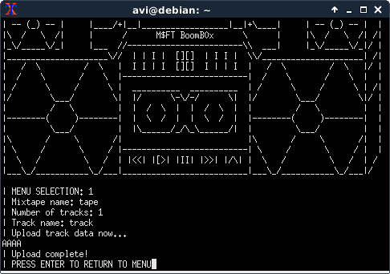
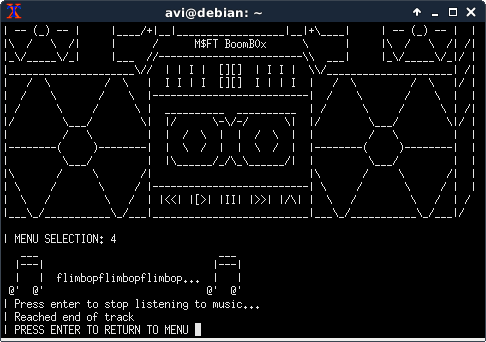
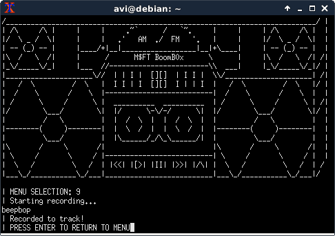

boomboxboombox does normallyboombox application allows non-malicious users to upload tapes consisting of a number of tracks of data. It plays them by rendering them into a phonetic approximation of music. Every 4 bits of the data are rendered into a phenome based on the following table:
| 0 | 1 | 2 | 3 | 4 | 5 | 6 | 7 | 8 | 9 | A | B | C | D | E | F |
| beep | bop | zip | zam | flim | flam | ity | bad | do | dub | da | bez | um | yo | wop | bap |
So for example, a track consisting of "AAAA" would get rendered as flimbopflimbopflimbopflimbop (since 'A' == 0x41).
 
It also allows recording over the data at the current position of the tape, using the phenome representation as input.

There are also a number of management options:
My first thought was that the vulnerability would be a UAF, so I started off by reversing the upload/eject codepaths, which conveniently also involved discovering details of the data structures that boombox uses. Sadly, all the input seemed to be handled cleanly in upload, and everything is freed and nulled correctly in eject.
The next place I looked was seek, to see if it had bounds checks (which it did).
The next obvious place for a vulnerability to be would be in record/play, as those are string handling functions. play delegates to render_music, and record to record_aux. Both helper functions take a length parameter, and both of them are passed something like track->length - boombox->current_position, which is only correct if you can never go past the end of a track, since the helpers use their length parameter unsignededly.
With the goal of finding a way to trigger an integer overflow in record, I looked at fast_forward, and found that it does a gimmicky calculation involving milliseconds until the enter key is pressed.

Note the difference between 4*(ticks/1000) and (4*ticks)/1000. Due to integer truncation, if ticks is 1500, the former evaluates as (4*(1500/1000) -> 4*1 -> 4), while the latter evaluates as ((4*1500)/1000 -> 6000/1000 -> 6). (This is similar in spirit to a class of vulnerabilities called Time-of-Check vs. Time-of-Use, or ToC/ToU for short.) Since ticks is attacker-controlled (it's how long we wait to send a newline after), this means that it's possible to set the current position in the track to 2 past the end of the track. This then results in -2 being passed as a size to record_aux, being treated as obscenely large (integer overflow), and allowing a heap smash.
There's a convenient print_flag function in boombox.exe, so the only thing needed to win is control of the instruction pointer and a .text segment address (assuming ASLR is on).
There's a boombox_t struct on the stack, and an attacker-influenced layout of tape_t and track_t on the heap.
My exploit:
tape1 | track1 | track2 | tape2 | track3tape1's tracks array has pointers to track1 and track2, and tape2's has a pointer to track3track1, and triggers the fast_forward ToC/ToU bug.record as a heap smash to set the track2 length to be 1024 (increased from 512)2**64-1 is that play does a loop that reads up to the track's length (although it doesn't overflow the rendering buffer), and it needs to be practical to read the content of heap to find out where the stack is.track2, reads the box pointer from tape2 (it's set in upload_mixtape, but never used anywhere, so it's probably deliberate for exactly this purpose).track2 to overwrite the tape2->tracks[0] to point at an offset into the boombox so that tape2->tracks[0]->length overlaps with the boombox's pointer to the second tape. This orphans track3.tape2->tracks[0] to create a "reasonable" length field after the boombox's tapes (overwriting something on the stack that's probably not important).select_mixtape.track2 to overwrite the tape2->tracks[0] to use the "reasonable" length field on the stack created in step 6.tape2->tracks[0] to read main's return address, bypassing ASLR.tape2->tracks[0] to overwrite main's return address to point at an offset into print_flag.print_flag directly, it segfaulted and didn't print out the flag. At first, I had thought that I had used the wrong original address in the ASLR calculation, but when I tried using print_boombox and print_menu, those worked correctly. I tried skipping print_flag's stack cookie initialization (by using print_flag+0x1b) on the hunch that "maybe it's writing to the stack wrongly somehow", and it printed out the flag before segfaulting.
I wasn't fast enough to solve this during CSAW Finals. The challenge's author sent it to the RPISEC mailing list over winter break, soliciting writeups for it.